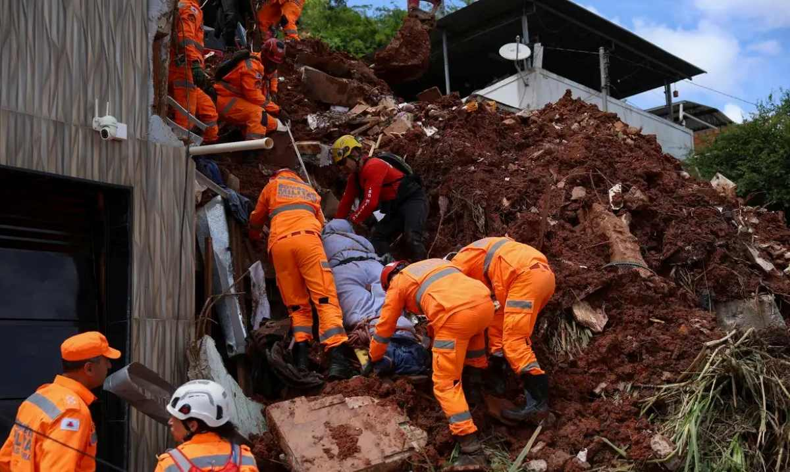

TV Davi® Notícias de Feira de Santana e Região
TV Davi® Notícias de Feira de Santana e Região
Moradores relatam transtornos recorrentes e cobram implantação de rede de drenagem no bairro.

Serviço funciona 24h por dia e tem o objetivo de agilizar o atendimento em casos de alagamentos, deslizamentos e desabamentos.
Ontem - em Feira de Santana e Região

Com mais quatro mortes confirmadas em Juiz de Fora, sobe para 53 o número de mortos na Zona da Mata Mineira desde segunda-feira (23).
Ontem - em Feira de Santana e Região
Humorista de 65 anos passou mal enquanto pilotava motocicleta na região da Vila Gustavo, Zona Norte de São Paulo.
Ontem - em Feira de Santana e Região

Saúde
Caso ocorreu em Feira de Santana. Vítima foi identificada como Edilson Neves Cerqueira.
Ontem - em Feira de Santana e Região
Os avanços foram apontados em um estudo que foi divulgado nesta terça-feira (24) pelo Instituto Trata Brasil.
há 2 dias - em Feira de Santana e Região

Outras cinco cidades baianas estão com alerta de grande perigo, segundo o Inmet.
há 2 dias - em Feira de Santana e Região

Carga seguia de Itabuna para a fábrica da Nestlé em Feira de Santana. Por g1 Feira de Santana e região
há 2 dias- em Feira de Santana e Região

Volume de chuva na região de Iaçu ultrapassou 150 milímetros em poucas horas.
Há 3 dias - em Feira de Santana e Região

Caso ocorreu em Conceição do Coité. Vítima, identificada como Apollo Sousa Barreto, desapareceu enquanto brincava com uma prima na casa de familiares.
há 3 dias - em Feira de Santana e Região

Vergalhão fazia parte da estrutura de um alicerce construído em terreno de Conceição do Coité. Queda provocou uma laceração grave na perna direita.
há 3 dias - em Feira de Santana e Região

Inscrições seguem abertas até 6 de março. Curso 'PartiuIF' prepara estudantes para a seleção do instituto.
Inscrições começam nesta quinta-feira (5) e seguem até às 17h do dia 2 de março, através do site da organizadora do certame.